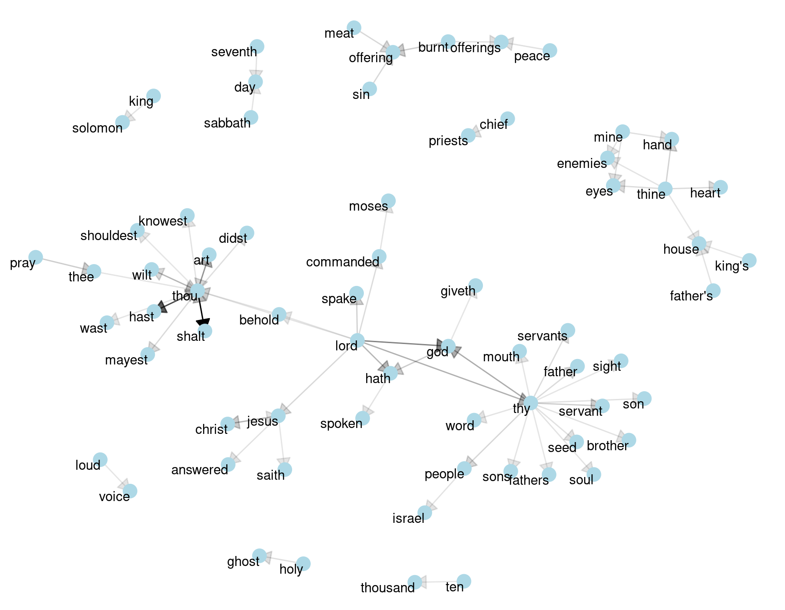

Topic modeling üìö
Jak vytěžit jazykové modely a nepřijít o práci
![]()
30. 11. 2023
Topic‚Ķ co? ü§î
Topic modeling
velké množství textu
rozdělení do dokumentů
❓ jaká témata se v textu objevují
❓ jaké je zastoupení témat v jednotlivých dokumentech
Pozor
TM vs. shrnutí textu, extrakce klíčových slov, zero-shot klasifikace, rozeznávání pojmenovaných entit atp.
Něco na čtení


Z “historie”
- preprocessing, stopwords, tokenizace (viz Hvitfeldt & Silge, 2021)
- co s flektivními jazyky jako čeština?
- lemmatizace, stemming
- tokeny s sebou nenesou kontext
(lze trochu obejít pomocí n-gramů)
N-gramy
- místo
topicamodelingzavedutopic modeling - pohyblivé okno nad textem → možnost grafů
N-gramy
Silge & Robinson (2017)
Z “historie” 2
- četnosti (term frequency)
- TF-IDF (term frequency – inverse document frequency; součin)
IDF(\text{token}) = \ln{\left(\frac{n_{\text{dokumentů}}}{n_{\text{dokumentů s tokenem}}}\right)} - document-term matrix (DTM)
| topic | modeling | … | |
|---|---|---|---|
| dokument č. 1 | 0 | 5 | … |
| dokument č. 2 | 2 | 1 | … |
| dokument č. 3 | 4 | 8 | … |
| … | … | … | … |
Přístupy k topic modelingu
- latentní Dirichletova alokace (Latent Dirchlet Allocation, LDA, Blei et al., 2003)
- Non-negative Matrix Factorization (NMF)
- Latent Semantic Analysis (LSA)
Latent Dirchlet Allocation
- každý dokument je směsicí různých témat
- každé téma se skládá z mixu slov
- jednotlivá slova mohou být zastoupena ve více tématech
Ukázka 1
Latent Dirchlet Allocation
Problémy tradičních přístupů
- nutnost preprocessingu
- tokeny standardně bez kontextu
- náročná interpretace výsledků
Možnosti
word embeddings (“vnoření slov”)
- převedení textových dat na čísla
- čísla = N-dimenzionální vektory v prostoru
- můžeme dělat matematiku, např:
- kosinová podobnost (cos úhlu mezi 2 vektory) nebo
- vec(\text{král}) - vec(\text{muž}) + vec(\text{žena}) = vec(\text{královna})
Možnosti 2
průměr word embeddings za každý dokument
redukce dimenzionality
clustering
❓❓❓
Možnosti 3
top2vec(Angelov, 2020)- embeddings pro dokumenty a slova ve stejném prostoru
- redukce dimenzionality
- clustering
- hledání nejbližších slov kolem centroidů clusterů → interpretace
Možnosti 4
BERTopic(Grootendorst, 2022)- embeddings dokumentů
- redukce dimenzionality
- clustering
- sloučení obsahu dokumentů v rámci clusterů, tokenizace
- reprezentace témat pomocí upravené TF-IDF1
Zdroj: maartengr.github.io/BERTopic
BERTopic – embeddings
- hlavní “objekt” celého modelování
- předtrénovaný model SBERT (Reimers & Gurevych, 2019)
- speciálně uzpůsobený na věty (a kratší odstavce)1
BERTopic – redukce dimenzí
- máme data s 18 846 rádky 384 sloupci (384dimenzionální embeddings)
- potřeba redukce
- metoda UMAP (Uniform Manifold Approximation and Projection for Dimension Reduction)
- pozor – stochastické
BERTopic – clustering
- identifikace skupin mezi dokumenty
- metoda HDBSCAN (Hierarchical Density-Based Spatial Clustering of Applications with Noise)
- hustota prvků v prostoru
- možnost outlierů
Ukázka 2
BERTopic
Reference
Angelov, D. (2020). Top2Vec: Distributed Representations of Topics. arXiv. https://arxiv.org/abs/2008.09470
Blei, D. M., Ng, A. Y., & Jordan, M. I. (2003). Latent Dirichlet Allocation. The Journal of Machine Learning Research, 3, 993–1022.
Grootendorst, M. (2022). BERTopic: Neural topic modeling with a class-based TF-IDF procedure. arXiv preprint arXiv:2203.05794.
Hvitfeldt, E., & Silge, J. (2021). Supervised Machine Learning for Text Analysis in R. https://doi.org/10.1201/9781003093459
Mikolov, T., Chen, K., Corrado, G., & Dean, J. (2013). Efficient Estimation of Word Representations in Vector Space. arXiv. https://arxiv.org/abs/1301.3781
Reimers, N., & Gurevych, I. (2019). Sentence-BERT: Sentence Embeddings using Siamese BERT-Networks. https://arxiv.org/abs/1908.10084
Silge, J., & Robinson, D. (2017). Text Mining with R: A Tidy Approach. O’Reilly Media.